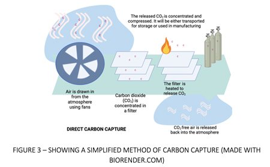

Non Medical Device
Devices can be created that can probe an environment and image it based on the fact that sound travels differently through different objects, and thye have different reflectivities. Flaws and defects under a surface can be detected. It can be used to discovere the presence of unexpected deviances in a land area purposed for carbon dioxide disposal. Example: Texas is the largest carbon dioxide (CO2) producer in the United States, creating 706.5 million metric tons annually. This is primarily because of the Gulf Coast's involvement in petrochemical processing. From neighboring Lake Charles, Louisiana, through Corpus Christi, Texas, the Coast is heavily clustered with industrial plants that refine oil to produce gasoline for fuel or various petrochemicals and plastics widely used worldwide. The state is also a leader in projects that will accelerate the innovations needed to reduce the impact of fossil fuel breakdown products on our environment. This includes decarbonization of the environment through carbon capture, utilization, and storage (CCUS). The figure (made with biorender.com) and the YouTube video explain carbon capture. (https://www.youtube.com/watch?v=8qnDaSCMod8) Direct air capture of carbon will either lead to its conversion in manufacturing useful products or its being transported to storage facilities.
Since carbon dioxide is a gas, and the storage medium is a liquid, ingenious techniques for identifying potential sources of leakage along the transport pathways and storage centers will be required. There are significant ongoing projects involving CO2 storage, such as those directed by Professor T. Meckel at the University of Texas in Austin and Peter Duncan of MicroSeismic. We can collaborate with these groups, which adds to our initiatives' feasibility and potential success. Another source of green energy is liquid hydrogen. Hydrogen will require the same process to ensure that leakage does not occur.
